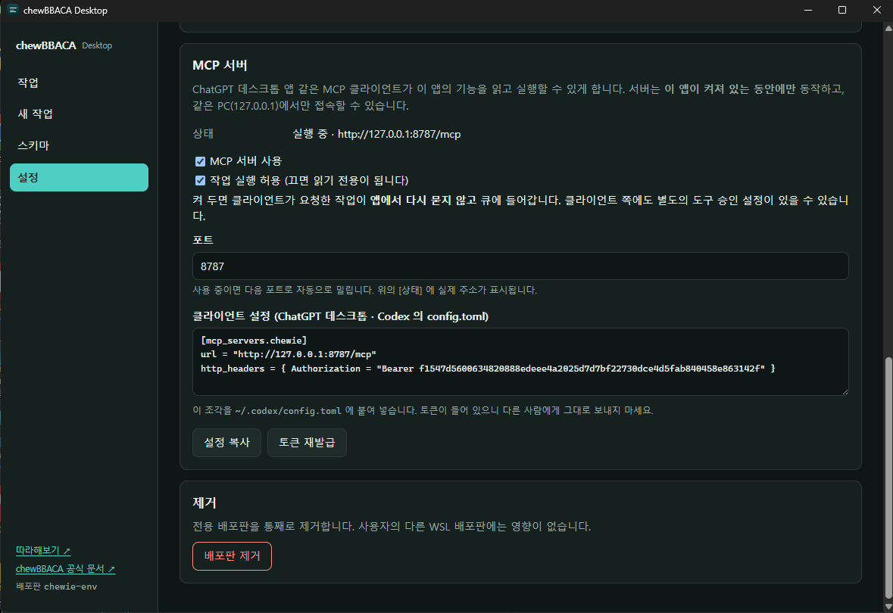
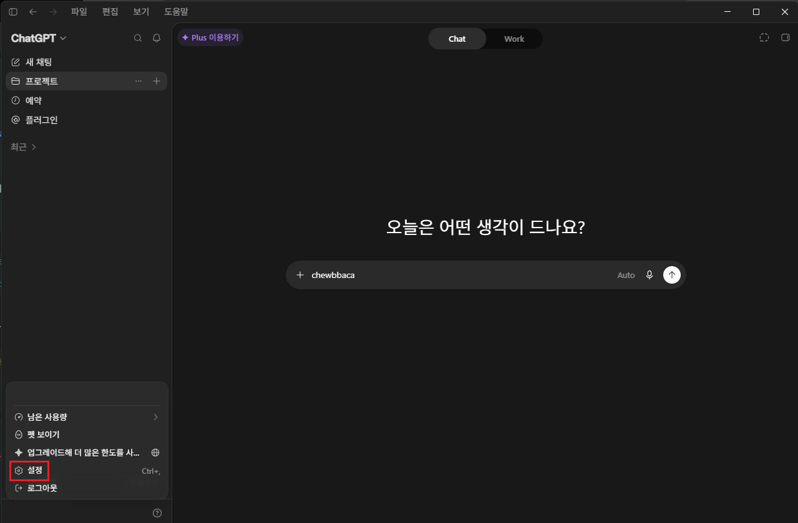
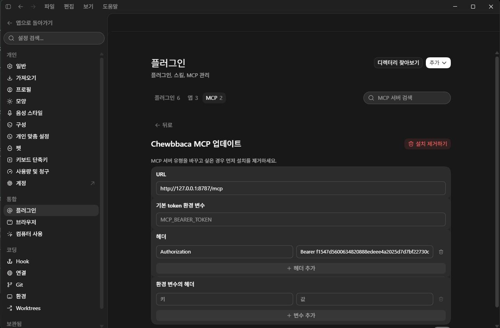
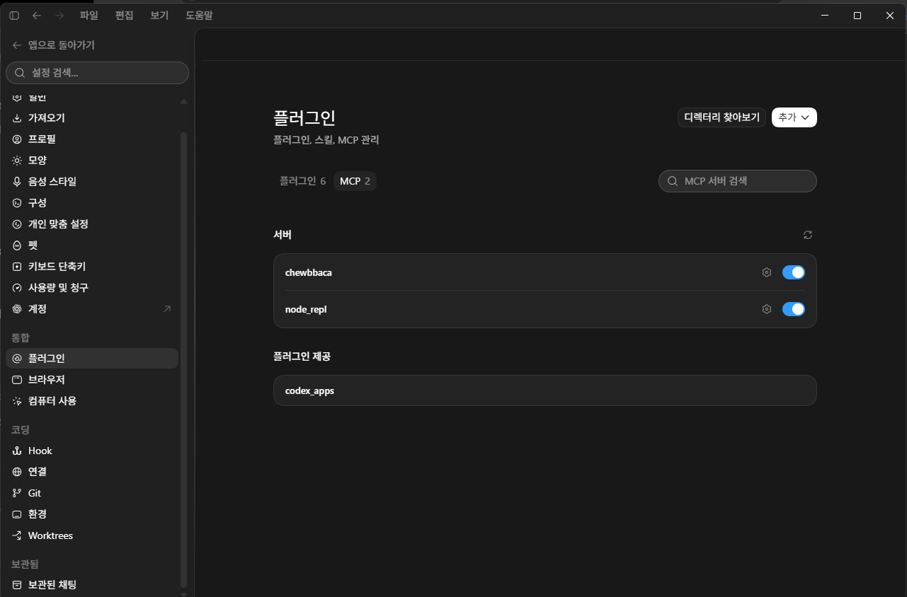

ChatGPT 데스크톱 앱에 이 앱을 도구로 등록하면, 화면을 직접 조작하는 대신 “이 폴더로 스키마 만들어줘” 처럼 말로 시킬 수 있습니다. 등록은 한 번, 5분이면 끝납니다.
127.0.0.1)에서만 닿습니다.
이 앱의 [설정] 화면을 열고 맨 아래 MCP 서버 칸을 봅니다.
상태에 실행 중 · http://127.0.0.1:8787/mcp 처럼 주소가 보이면 준비된 것입니다.

왼쪽 아래 계정 메뉴를 누르고 [설정]을 고릅니다. 단축키는 Ctrl+, 입니다.

설정 왼쪽 목록에서 플러그인을 고르고, 가운데 위의 MCP 탭으로 옮긴 뒤 오른쪽 위 [추가]를 누릅니다. 맞춤형 MCP에 연결 화면이 나오면 아래 표대로 채웁니다. 유형의 기본값이 STDIO라 바꾸는 것을 잊기 쉽습니다.
| 칸 | 넣을 값 |
|---|---|
| 이름 | 아무거나 (예: chewBBACA). 나중에 목록에서 이 이름으로 보입니다 |
| 유형 | 스트리밍 가능한 HTTP — STDIO가 아닙니다 |
| URL | 앱 [상태]에 보이는 주소 그대로 (예: http://127.0.0.1:8787/mcp) |
| 헤더 | 키에 Authorization, 값에 Bearer + 공백 + 토큰 |
헤더 값은 Bearer 다음에 공백 하나를 두고 토큰을 붙인 모양입니다.
토큰은 앱 설정의 [설정 복사] 로 얻은 조각 안에 들어 있습니다.
Bearer 여기에64자리토큰을붙여넣습니다MCP_BEARER_TOKEN 이 힌트입니다 — 여기는 토큰 값이 아니라
환경 변수의 이름을 적는 자리입니다. 토큰을 그대로 붙여넣으면 그런 이름의 환경 변수를
찾다가 실패해서 인증이 되지 않습니다. 실제로 이것 때문에 한참 헤맸습니다.
토큰은 아래 [헤더]로 넣습니다.

Authorization / Bearer … 로 들어가 있습니다.
이미 등록한 서버는 목록에서 톱니바퀴를 눌러 이 화면으로 돌아올 수 있습니다.
다 채웠으면 오른쪽 아래 [저장]을 누릅니다.

새 채팅을 열고, 화면 위쪽의 Chat / Work 중 Work를 고릅니다. 이 전환이 없으면 등록이 아무리 정확해도 ChatGPT가 “그런 도구가 없다”고 답합니다. 도구를 쓰는 것은 Work 쪽입니다.
그다음 아래처럼 말해 봅니다. 위에서부터 순서대로 해보는 것을 권합니다.
| 증상 | 확인할 것 |
|---|---|
| “그런 도구가 없다”고 함 (가장 흔합니다) |
대화창이 Chat 모드입니다. Work 로 바꾸세요. 설정에 서버가 켜져 있어도 Chat 모드에서는 도구가 대화에 올라오지 않습니다. |
| 도구가 하나도 안 보임 |
① 이 앱이 켜져 있나요? ② 브라우저 주소창에 http://127.0.0.1:8787/ 를 넣어
chewBBACA Desktop MCP server 라는 글자가 나오면 서버는 살아 있는 것입니다.
③ 앱 [상태]의 주소와 ChatGPT에 넣은 URL이 같은지 보세요 — 아래 항목을 참고하세요.
|
| 어제까지 되던 것이 갑자기 안 됨 |
앱이 두 개 켜져 있으면 나중 것이 8788로 밀립니다. ChatGPT는 8787로 고정돼 있으니
그 순간 연결이 끊깁니다. 앱을 하나만 남기고, [상태]에 …:8787/mcp 가
보이는지 확인하세요.
|
| 연결은 되는데 “권한이 없다”거나 계속 실패 | 토큰이 틀린 경우입니다. 앱에서 [설정 복사]를 다시 눌러 헤더 값을 새로 넣으세요.
Bearer 와 토큰 사이 공백도 확인합니다. |
| 읽기는 되는데 실행만 안 됨 | 앱 설정의 [작업 실행 허용]이 꺼져 있습니다. 켜면 실행 도구가 나타납니다. |
| 실행을 시켰는데 시작을 안 함 | 앱은 한 번에 하나씩만 돌립니다. 앞선 작업이 끝나면 자동으로 이어서 시작합니다 — 앱의 [작업] 화면에서 순서를 볼 수 있습니다. |
| 토큰이 새어 나간 것 같음 | 앱 설정에서 [토큰 재발급]. 이전 설정은 즉시 못 쓰게 되므로 ChatGPT 쪽 헤더도 다시 넣어야 합니다. |
| 그래도 원인을 모르겠음 |
접속 기록이 남습니다. 아래 파일을 메모장으로 열어 마지막 줄들을 보세요.
기록이 아예 없으면 ChatGPT가 우리 서버에 닿지도 못한 것이고,
→ 401 이 있으면 토큰 문제, tools/list 까지 찍혀 있으면
연결은 정상이므로 ChatGPT 쪽(Work 모드 등)을 보면 됩니다.
|
되돌릴 수 없는 조작은 도구로 아예 내놓지 않았습니다. 스키마 삭제, 전용 배포판 제거, 디스크 정리, 재부팅, 설정 변경은 대화로 시킬 수 없습니다. 확인 창을 띄울 화면이 없는 통로이기 때문에, 그런 일은 앱에서 직접 하도록 남겨 두었습니다.
[작업 실행 허용]이 켜져 있으면 ChatGPT가 요청한 분석이 앱에서 다시 묻지 않고 큐에 들어갑니다. 읽기만 시키고 싶다면 이 체크를 끄세요 — 실행 도구가 목록에서 사라집니다. ChatGPT 쪽에도 별도의 도구 승인 설정이 있을 수 있습니다.
같은 PC 안에서만 닿는 서버지만, 토큰을 아는 프로그램은 이 앱의 기능을 쓸 수 있습니다. [설정 복사]로 만든 조각을 채팅이나 이슈에 그대로 붙여넣지 마세요.
ChatGPT 데스크톱 앱과 Codex는 위 방식 그대로 됩니다. 웹 브라우저로 쓰는 ChatGPT는 안 됩니다 — 그쪽 커넥터는 인터넷에 공개된 주소만 받는데, 이 서버는 내 컴퓨터 안에만 있기 때문입니다. Claude 데스크톱 앱은 현재 이 방식으로 붙지 않습니다 (다른 연결 방식을 요구합니다).